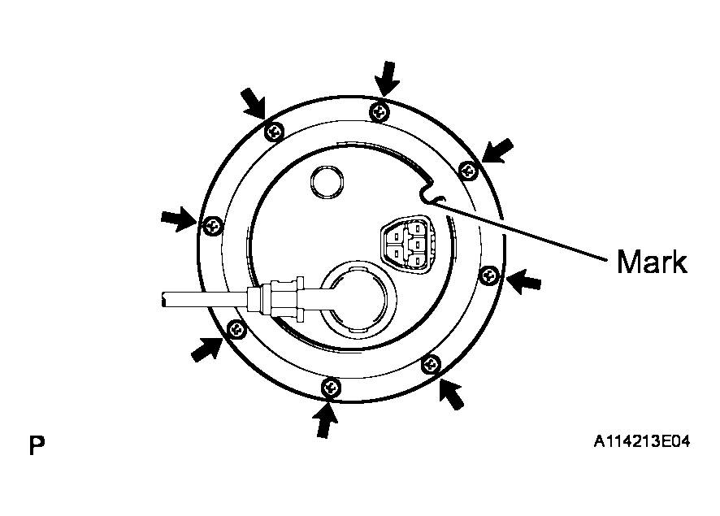
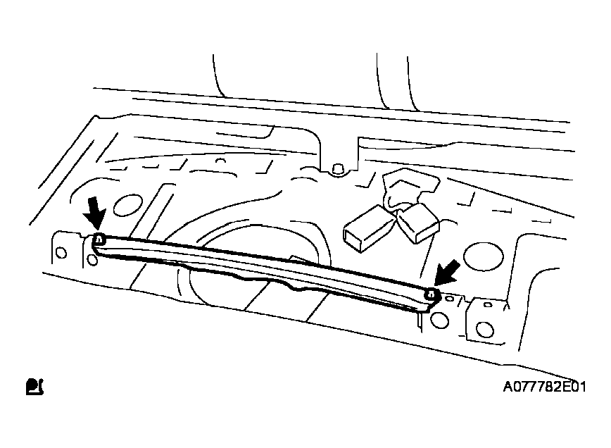

Fuel Pump: Installation
- INSTALL FUEL PRESSURE REGULATOR ASSEMBLY
- Apply a light coat of gasoline or grease to a new O-ring, and install it onto the fuel pressure regulator.
- Push the fuel pressure regulator into the fuel filter.
- INSTALL FUEL PUMP FILTER
- Install the fuel pump filter with a new clip.
- INSTALL FUEL PUMP
- Install the fuel pump to the fuel filter.
- CONNECT FUEL PUMP HARNESS
- Connect the fuel pump harness.
- Connect the connector.
- INSTALL FUEL SUCTION PLATE SUB-ASSEMBLY
- Attach the 4 snap claws to the claw holes.
- Connect the fuel pump connector.
- INSTALL FUEL SENDER GAUGE ASSEMBLY
- Install the sender gauge to the fuel pump.
- Connect the fuel sender gauge connector.
- INSTALL FUEL PUMP CUSHION RUBBER
- INSTALL NO. 2 FUEL SUCTION SUPPORT
- Attach the 5 snap claws to the claw hoses and install the fuel suction support.
- INSTALL FUEL PUMP ASSEMBLY WITH FUEL SENDER GAUGE ASSEMBLY
- Install a new gasket onto the fuel pump with fuel sender gauge.
- Install the fuel pump with fuel sender gauge onto the fuel tank.
- CONNECT NO. 2 FUEL EVAPORATION TUBE SUB-ASSEMBLY
- Set the fuel tank vent tube set plate on the fuel tank.
- Push the No. 2 fuel evaporation tube onto the pipe until the No. 2 fuel evaporation tube makes a "click" sound.
 Courtesy of © TOYOTA, LICENSE AGREEMENT TMS1002NOTE:
Courtesy of © TOYOTA, LICENSE AGREEMENT TMS1002NOTE:- Check the connected part for damage or foreign objects.
- After connecting, check if the No. 2 fuel evaporation tube and pipe are securely connected by pulling in them.
- INSTALL FUEL TANK VENT TUBE SET PLATE BOLT
- Align the marks of the fuel tank vent tube set plate and fuel pump with fuel sender gauge.
- Install the fuel tank vent tube set plate with the 8 bolts.

Courtesy of © TOYOTA, LICENSE AGREEMENT TMS1002Torque: 3.5 N*m (36 kgf*cm, 31 in.*lbf)
- CONNECT FUEL PUMP TUBE SUB-ASSEMBLY
- Install the fuel pump tube with the tube joint clip.
NOTE:
- Check that there are no scratches or foreign objects on the connected part.
- Check that the fuel tube joint is inserted securely.
- Check that the tube joint clip is on the collar of the fuel tube joint.
- After installing the tube joint clip, check that the fuel tube joint is not pulled off.
- Install the fuel pump tube with the tube joint clip.
- CONNECT FUEL PUMP CONNECTOR
- CONNECT CABLE TO NEGATIVE BATTERY TERMINAL
- CHECK FOR FUEL LEAKS (See FUEL INJECTOR )
- INSTALL REAR FLOOR SERVICE HOLE COVER
- Using new butyl tape, install the rear floor service hole cover.
- INSTALL REAR SEAT CUSHION SUPPORT BRACKET
- Install the bracket with the 2 bolts.

Courtesy of © TOYOTA, LICENSE AGREEMENT TMS1002Torque: 5.0 N*m (51 kgf*cm, 44 in.*lbf)
- Install the bracket with the 2 bolts.
- INSTALL REAR SEAT CUSHION ASSEMBLY (See INSTALLATION )